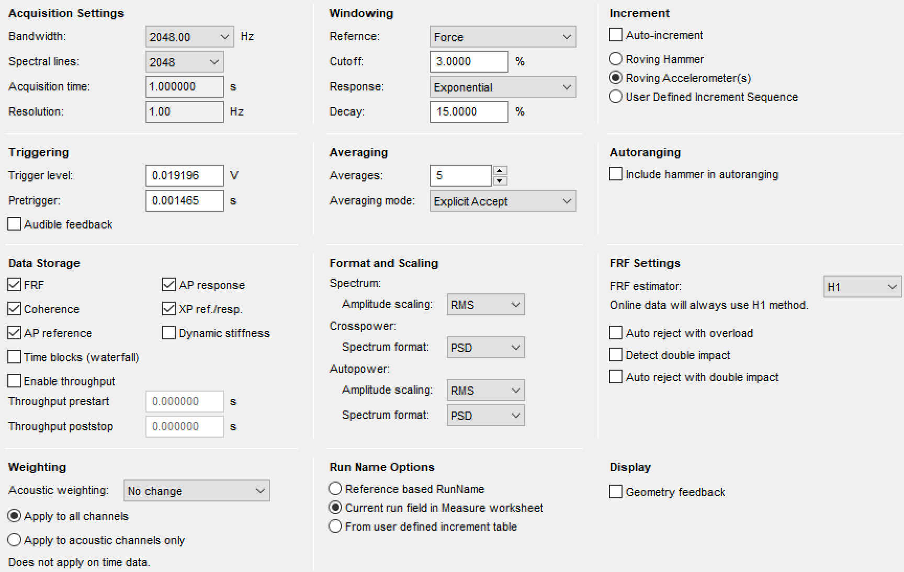
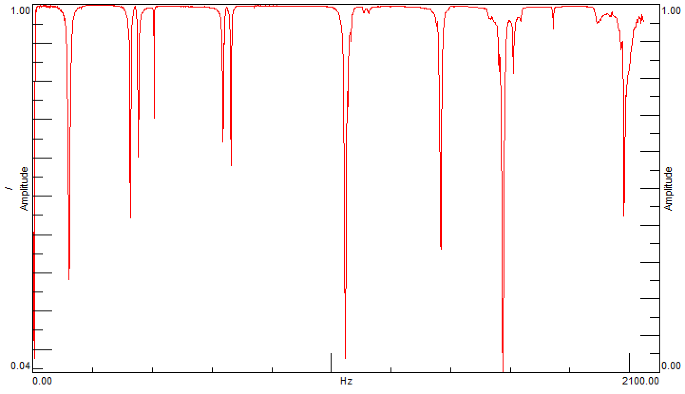
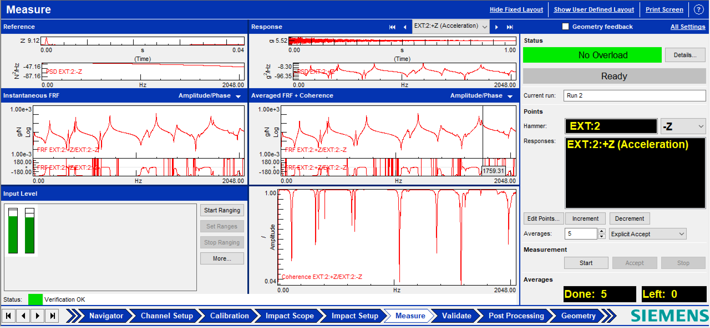
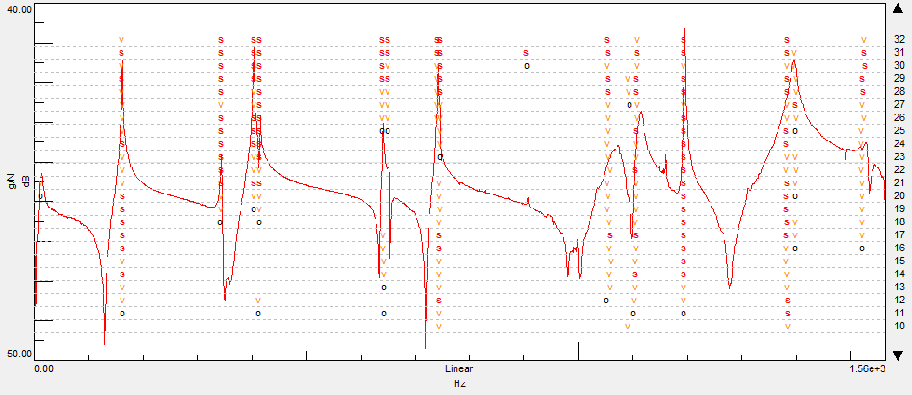

Experimental Modal Analysis of a Floating Brake Disc
Executive Summary
- Objective: Experimental characterization of the dynamic behavior of a floating brake disc under free-free boundary conditions to extract natural frequencies, damping ratios, and mode shapes.
- Tools & Methodology: Siemens Simcenter Testlab, Impact Hammer Testing, MDOF curve-fitting, Stabilization Diagram analysis, Frequency Response Function (FRF) extraction.
- Key Achievements: Successfully identified 14 physical structural modes up to 1500 Hz. Validated the experimental setup using a moving-accelerometer methodology, ensuring high measurement coherence and mitigating mass-loading effects.
1. Experimental Setup & Hardware Configuration
The impact-based modal testing was designed to evaluate the structure under free-free boundary conditions. To decouple rigid body modes from structural modes and minimize external energy dissipation, the disc was supported using low-absorption soft foam elements.
Data acquisition was performed utilizing Siemens acquisition hardware and Simcenter Testlab. Structural excitation was provided by an instrumented impact hammer, while a piezoelectric accelerometer, mounted with beeswax to minimize mass-loading, tracked the dynamic response across 84 Degrees of Freedom (DOFs).
Prior to the test campaign, transducer sensitivities were strictly calibrated within the Testlab channel setup to convert voltage signals into highly accurate physical quantities. The detailed acquisition and H1 FRF estimation parameters are illustrated in Figure 1.
| Transducer | Calibrated Sensitivity |
|---|---|
| Instrumented Impact Hammer | $15.9 \cdot 10^{-3}$ V/N |
| Piezoelectric Accelerometer | $5.39 \cdot 10^{-3}$ V/g ($g=9.81 \text{ m/s}^2$) |

2. Measurement Procedure & Signal Quality Assessment
A moving-accelerometer approach was adopted for the measurement campaign. To improve signal-to-noise ratio and eliminate random noise effects, five distinct impacts were recorded and averaged for each of the 84 acquisition points.
Signal reliability was actively monitored via the coherence function (Figure 2), ensuring values consistently approached unity. Expected local coherence drops were correctly identified near structural antiresonances, where the physical response amplitude approaches the noise floor of the instrumentation. The overall validity of the dataset was confirmed through the combined evaluation of FRF amplitude, phase, and Power Spectral Density (PSD) functions, which were continuously tracked through the measurement interface (Figure 3).


3. Modal Parameter Identification
The post-processing phase relied on a Multiple Degree of Freedom (MDOF) curve-fitting approach within Siemens Testlab to extract the modal parameters from the measured FRFs.
A stabilization diagram (Figure 4) was employed to systematically distinguish true physical structural modes from mathematical artifacts. By progressively increasing the model order, poles demonstrating stable frequency and damping characteristics across successive iterations were successfully isolated.
